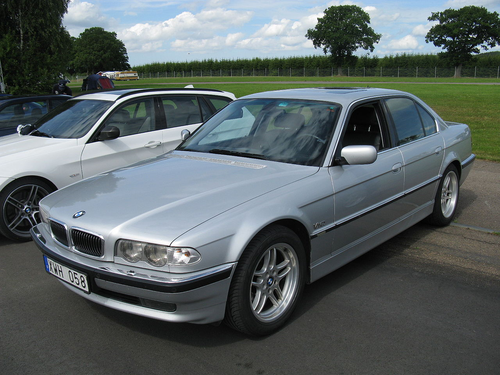
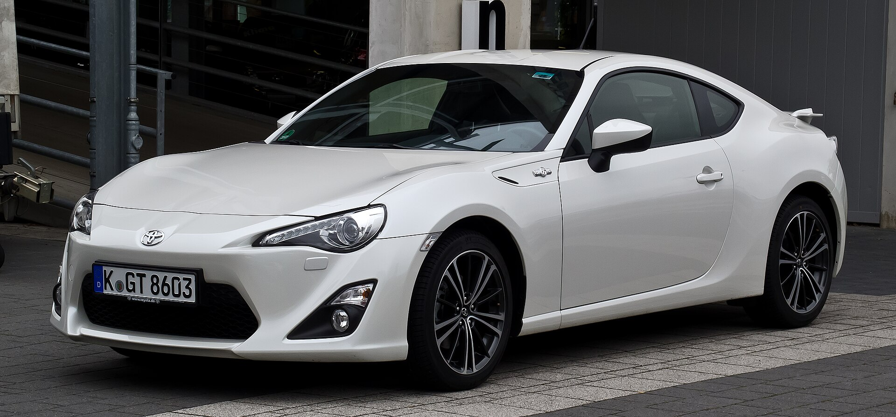
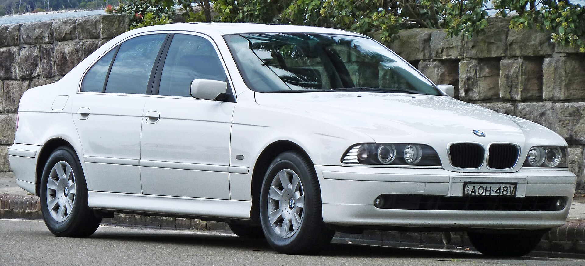

BMW E38
The BMW E38 is the third generation of the BMW 7 Series luxury cars and was produced from 1994 until 2001. The E38 replaced the E32 7 Series and was produced with petrol and turbo-diesel straight-six and V8 engines, along with a petrol V12 flagship model. Three wheelbase lengths were available — short (i), long (iL) and Limousine (L7).
The E38 was the first car available with curtain airbags. It was also the first European car to offer satellite navigation[1] and the first BMW to offer an in-built television. The E38 was the first 7 Series to be available with a diesel engine and the last to be available with a manual transmission.
Les mer om BMW E38 her

Toyota GT86
The Toyota 86 and the Subaru BRZ are 2+2 sports cars jointly developed by Toyota and Subaru, manufactured at Subaru's Gunma assembly plant.[1]
The 2+2 fastback coupé has a naturally-aspirated boxer engine, front-engined, rear-wheel-drive configuration, 53/47 front/rear weight balance and low centre of gravity; it was inspired by Toyota's earlier AE86, a small, light, front-engine/rear-drive Corolla variant widely popular for Showroom Stock, Group A, Group N, Rally, Club and drift racing.
For the first-generation model, Toyota marketed the sports car as the 86 in Asia, Australia, North America (from August 2016), South Africa, and South America;[2] as the Toyota GT86 in Europe; as the 86 and GT86 in New Zealand; as the Toyota FT86 in Brunei, Nicaragua and Jamaica and as the Scion FR-S (2012–2016) in the United States and Canada.[3][4]
The second-generation model is marketed by Toyota as the GR86 as part of the Gazoo Racing family.[5]
Les mer om Toyota gt86 her

Nissan Pathfinder
The Nissan Pathfinder is a range of sport utility vehicles manufactured by Nissan since 1986. Until the third-generation model, the Pathfinder is based on Nissan's compact pickup truck platform which it shares with the Navara/Frontier. The front end of the D21 (first generation) and R51 (third generation) Pathfinder is notably identical with the Navara/Frontier up until the B-pillars.
The Pathfinder was marketed as the Nissan Terrano (Japanese: 日産・テラノ, Hepburn: Nissan Terano) outside North America. Beginning in 2004, the R51 series was marketed internationally as the Pathfinder.
In 2012, the R52 series Pathfinder was released as a three-row crossover SUV based on the unibody Nissan D platform, moving away from the body-on-frame chassis format. The role of a mid-size body-on-frame SUV in Nissan's global lineup was passed to the Terra/X-Terra, which was released in 2018 and based on the D23 series Navara.
Les mer om Nissan Pathfinder her

Bmw E39
The BMW E39 is the fourth generation of the BMW 5 Series range of executive cars, which was manufactured from 1995 to 2004. It was launched in the sedan body style, with the station wagon body style (marketed as "Touring") introduced in 1996. The E39 was replaced by the E60 5 Series in 2003, however E39 Touring models remained in production until May 2004.[6][7]
The proportion of chassis components using aluminium significantly increased for the E39, and it was the first 5 Series to use aluminium for all major components in the front suspension or any in the rear. It was also the first 5 Series where a four-cylinder diesel engine was available. Rack and pinion steering was used for four- and six-cylinder models, the first time that a 5 Series has used this steering system in significant volumes. Unlike its E34 predecessor and E60 successor, the E39 was not available with all-wheel drive.
Les mer om BMW E39 her
